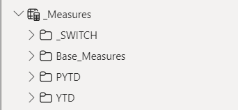

YTD vs PYTD performance analysis
Download the .pbix file
Documentation
Model
Measure Creation
Aimed to make a visualization to be able to:
- Compare a year's data with the previous year's data
- Choose the year
- Choose the Category
Design choices:
Visualization choices:
- On the top left Combo (Column & Line) chart I visualized YTD and PYTD data, and divided the column by the Sales Channels.
It shows that the Store, and Online sales producing the most profit.
The organization sold more products in 2019 April and May compared to 2020, however in 2020 during the same months the Gross Profit was higher compared to the previous year. - On the bottom left Heat Map I visualized the distribution of the main KPI-s.
There are 5 main areas where the Profit is concentrated during the years. - On the bottom right Waterfall Chart I visualized the difference between the YTD and PYTD data.
It shows that the profit growth is constant until 2019 June where it begins to stagnate until 2020 January where it starts to increase again.
During that year we can notice sudden increases / decreases in profit, sold quantity. -
On the top right Scatter Chart I visualized the City profabilites.
Documentation:
Power Query
Checked for null values / errors / dismatching primary key names
Removed Primary key Duplicates
Corrected Data Types
Renamed queries to Dim/Fact for readability
Merged the Location and Region table to avoid a Header/Description model, since a Star model has a better performance
Modelling
Created a date table for measures to use
Dim_Date = CALENDAR(
DATE(2018,01,01),
DATE(2022,12,31)
)Created a measure that Checks if we have prior a year data
Inpast =
VAR lastsalesdate = MAX(Fact_Sales[OrderDate])
VAR lastsalesdatePY = EDATE(lastsalesdate,-12)
RETURN
Dim_Date[Date]<=lastsalesdatePYCreated a table named Slicer_Values for using later on as a switch
Building Measures:
Created Profit, Gross Sales, Quantity measures what I'll use to create a switch on my Slicer
Sales = SUM(Fact_Sales[Unit Price])
Quantity = SUM(Fact_Sales[Order Quantity])
COGs = SUM(Fact_Sales[Unit Cost])
GrossProfit = [Sales]-[COGs]Created PriorYearToDate Measures
PYTD_Sales = CALCULATE(
[Sales],SAMEPERIODLASTYEAR(Dim_Date[Date]),
Dim_Date[Inpast]=TRUE()
)
PYTD_Quantity = CALCULATE(
[Quantity],SAMEPERIODLASTYEAR(Dim_Date[Date]),
Dim_Date[Inpast]=TRUE()
)
PYTD_GrossProfit = CALCULATE(
[GrossProfit],SAMEPERIODLASTYEAR(Dim_Date[Date]),
Dim_Date[Inpast]=TRUE()
)
Creating YearToDate Measures
YTD_Sales = TOTALYTD(
[Sales],Fact_Sales[OrderDate]
)
YTD_Quantity = TOTALYTD(
[Quantity],Fact_Sales[OrderDate]
)
YTD_GrossProfit = TOTALYTD(
[GrossProfit],Fact_Sales[OrderDate]
)Built Switch Measures
S_PYTD =
VAR selected_value = SELECTEDVALUE(Slicer_Values[Values])
VAR result = SWITCH(selected_value,
"Sales", [PYTD_Sales],
"Quantity", [PYTD_Quantity],
"Gross Profit", [PYTD_GrossProfit],
BLANK()
)
RETURN result
S_YTD =
VAR selected_value = SELECTEDVALUE(Slicer_Values[Values])
VAR result = SWITCH(selected_value,
"Sales", [YTD_Sales],
"Quantity", [YTD_Quantity],
"Gross Profit", [YTD_GrossProfit],
BLANK()
)
RETURN resultCreated the comparison Measure
YTD vs PYTD = [S_YTD]-[S_PYTD]Created Display Folders for the measures
